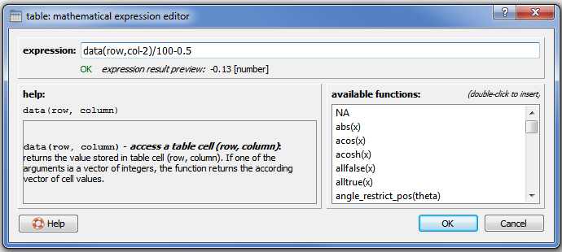
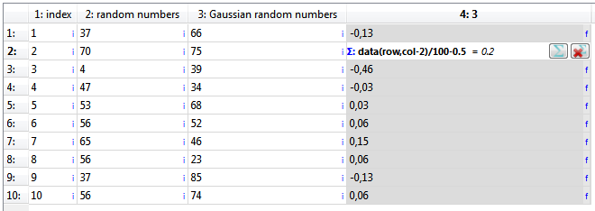
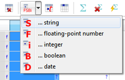
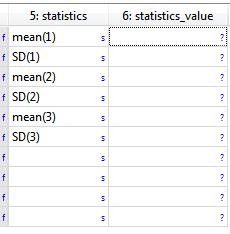
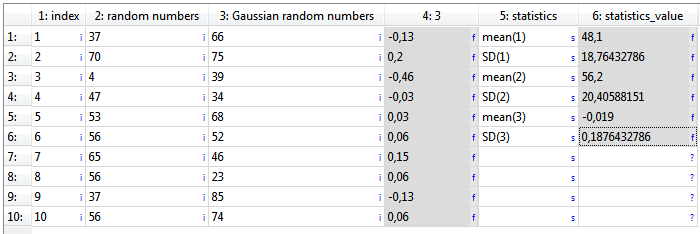

$$qf_commondoc_header.start$$ $$qf_commondoc_header.end$$
Introduction
In addition to table column expressions, the table plugin of QuickFit $$version$$ also supports per-cell expressions. They are a powerful tool to perform calulations in a table. First of all the expression use the built-in expression parser, which has been extended with special functions to access the table contents and for column statistics.
You can set a cell expression for every table cell with the shortcut '=' or the button  .
.
Tutorial
- Start a new QuickFit project and add an editable table (Data Items | Insert Raw Data | Table | Editable Table) and open the table editor (double-click table in project
- Go to the "Data Table" tab. It will now display an empkty table.
- Now we add some arbitrary data to the table. To do so, copy (select & Ctrl+C) the following CSV data and insert it into the table by pressing Ctrl+V$$startbox_example$$
#! "index"; "random numbers"; "Gaussian random numbers"
1; 37; 66
2; 70; 75
3; 4; 39
4; 47; 34
5; 53; 68
6; 56; 52
7; 65; 46
8; 56; 23
9; 37; 85
10; 56; 74
$$endbox$$ This will result in a table like this:
 The given table of values contains one column with increasing numbers, one column of random numbers drawn from a flat distribution between 0 and 100 and one column of Gaussian random variates with mean 50 and standard deviation 20.
The given table of values contains one column with increasing numbers, one column of random numbers drawn from a flat distribution between 0 and 100 and one column of Gaussian random variates with mean 50 and standard deviation 20.
- Starting from these prerequesites, we can now use cell expressions to calculate several things:
- add another column and select the whole column. Then press = or click on . A new window will open up, which allows to edit the expression, used for all seelcted cells:

In this window, enter the following expression:
$$codeexample:data(row,col-2)/100-0.5$$
After clicking OK, the table will look like this:

The expression does the following: data(r,c) retrieves the value in table cell in row r and column c. The two variables row and col contain the row and column number of the current cell, so data(row,col-2) retrieves the value of the cell, which is in the same row, but two columns to the left (i.e. the random variate from the flat distribution between 0 and 100). Then this value is divided by 100 and shifted by -0.5. Therefor the column should now contain a random number, which is distributed around 0 and with values in the range $$math:[-0.5, 0.5]$$.$$note:The cells that are calculated from a cell (or column) expressions are shown with a gray background in the table.
If you double-click any cell with a cell expression, an editor will be shown, as displayed for the second row in the screenshot above. It shows the symbol Σ: and the expression in bold-face. Behind that you have to buttons, that allow you to open the editor for this cell (), or to remove the expression ( ). If you remove an expression, the last expression result is retained as cell value!$$
). If you remove an expression, the last expression result is retained as cell value!$$
- Now we will calculate the statistical properties of the three columns. For that add two more columns to the table and select the first one. Then set its datatype to string, by clicking on:

Finally enter these values:

- One after the other, select the first six cells in the 6th column and press =/ for each. Then enter these expressions:$$codeexample:mean(column(2))
std(column(2))
mean(column(3))
std(column(3))
mean(column(4))
std(column(4))$$These expression calculate the mean and standard deviation of all four columns. The results should be:
